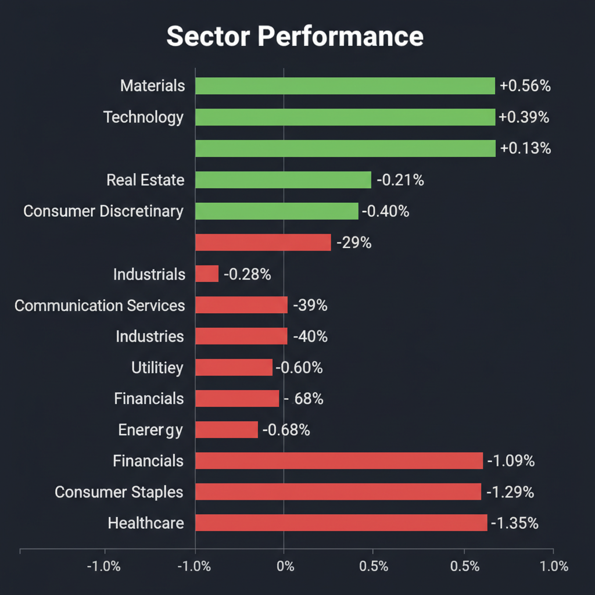
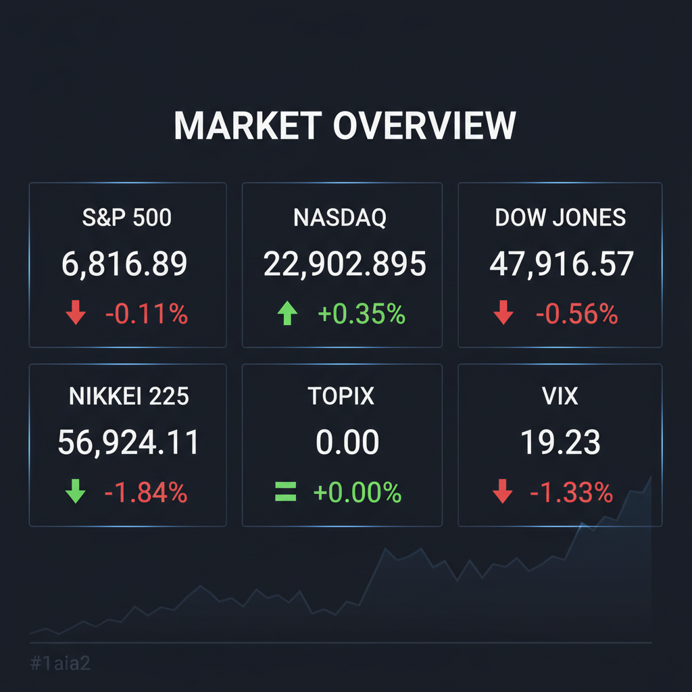

Daily Investment Report - 2026-04-13
Generated: 2026/4/13 8:17:00


1. エグゼクティブサマリー
- 中東情勢の緊迫化（イラン船舶封鎖）と原油100ドル突破により、インフレ再燃リスクが高まり、安全資産としてのドルが急伸しています。
- 一部のハイテク株や日本株指数は底堅さを見せていますが、これはAI期待による楽観論が下支えしているに過ぎず、市場はバブル崩壊前夜の「慢心（コンプラセンシー）」状態にあるとの強い警告が出ています。
- 投資家は防御レベルを最大に引き上げ、キャッシュ比率の拡大とテールリスクへのヘッジを最優先しつつ、底堅い収益力を持つ中小型株へ厳選して資金を向けるべき局面です。
2. 注目銘柄リスト
強気（買い推奨）
- ローツェ（6323.T） [時価総額: 約3,000億円規模]: 大幅な増益・増配ガイダンスを発表し、半導体サイクルの底打ちとAI需要の恩恵を如実に示しています。上値にやれやれ売りが存在しない青天井のチャートパターンを形成しており、直近のブレイクラインをストップロスに設定した順張りエントリーが有効です。
中立（様子見）
- Kornit Digital（KRNT.O） [時価総額: 約8億〜10億ドル]: M&Aを通じてオンデマンド印刷のソフトウェアモデルへ転換を図っており、破壊的成長（テンバガー）のポテンシャルを秘めた無借金企業です。しかし、イスラエル拠点というカントリーリスクと、チャート上の明確なダウントレンド（落ちるナイフ）が懸念されるため、底打ち反転のシグナル確認までは様子見が賢明です。
- 安川電機（6506.T） [時価総額: 約1.6兆円規模]: 27年2月期の営業増益見通しという中長期のポジティブなガイダンスは出たものの、足元の中国マクロ経済の不透明感や、チャート上の上値抵抗線を抜けきれていないことから、トレンド転換のシグナル確認を待つべきです。
弱気（警戒）
- ホットランド（3196.T） [時価総額: 約200億円規模]: 原油高やインフレによる利益率圧迫が懸念される外食産業において、新株発行（エクイティ・ファイナンス）による希薄化が嫌気され安値を更新しています。明確な成長投資への転換が確認できない限り、安易な逆張りは典型的なバリュートラップとなります。
3. セクター推奨ランキング
原油100ドル定着による強力なインフレヘッジ先となります。ただし直近の急反発後はテクニカルな利益確定売りが出やすいため、押し目を待ってからのエントリーが安全です。
コストプッシュ型インフレ環境下において、原材料高を価格転嫁しやすい川上産業として相対的なアウトパフォームが期待されます。
グローバルな設備投資需要に支えられており、日本の周辺装置や画像認識AIなど、大衆にまだ認知されていないニッチトップの中小型株に資金が向かう公算があります。
原油高による物流費や原材料コスト高騰の直撃を受け、利益率が大きく圧迫されるため当面は上値が重い展開が予想されます。
インフレ再燃に伴う金利高止まり環境下では、将来キャッシュフローの現在価値が目減りするためバリュエーションの切り下げ（資金流出）が続く、最も警戒すべきセクターです。
4. 今週の注目イベント
- 蘭ASMLおよび台湾TSMCの決算発表（世界の半導体需要とAI設備投資モメンタムの試金石）
- 米・イラン間の船舶封鎖および軍事動向に関するヘッドラインの追跡
- IMF世界経済見通しの発表
5. リスク要因
- 米軍とイランの偶発的衝突によるホルムズ海峡の実質的封鎖と、原油130〜150ドルへの急騰（第3次オイルショック）
- インフレ制御不能に伴うFRBの「再利上げ」シナリオ浮上と、それに伴うAI・半導体バブルの連鎖的崩壊
- ドル高と原油高の同時進行による「悪い円安」の加速と、コスト増による日本株クラッシュ
- 現在の異常な低ボラティリティ（VIX 19.23）に潜む、オプション市場のヘッジ不足とテールリスク（ブラックスワン・イベント）の軽視
6. アクションアイテム
- ハイテク・半導体関連のポジションサイズを直ちに半減させ、米ドルや短期米財務省証券などへのキャッシュ比率を最大化する。
- 異常に安い現在のボラティリティ環境を利用し、VIXコール・オプションや株価指数のプット・オプションを購入してテールリスクをヘッジする。
- 急落している高PERソフトウェア株に対する「押し目買い（落ちるナイフを掴む行為）」を厳格に禁止する。
- ローツェ等の上昇トレンドにある銘柄を保有・新規エントリーする場合は、週末や夜間の地政学ニュースによる窓開け急落に備え、必ず逆指値（ストップロス注文）を市場に入れておく。